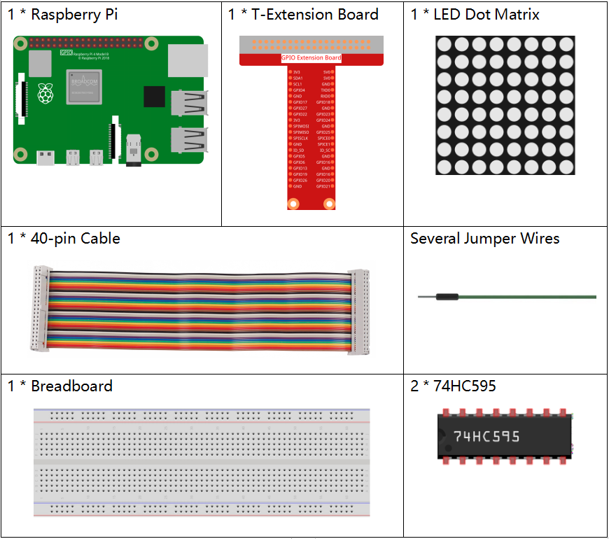

1.1.6 LED-Punktmatrix¶
Einführung¶
Wie der Name schon sagt, eine LED-Punktmatrix ist eine Matrix aus LEDs. Das Aufleuchten und Dimmen der LEDs formuliert unterschiedliche Zeichen und Muster.
Komponenten¶
Prinzip¶
LED-Punktmatrix
Im Allgemeinen kann die LED-Punktmatrix in zwei Typen eingeteilt werden: gemeinsame Kathode (CC) und gemeinsame Anode (CA). Sie sehen sich sehr ähnlich, aber innerlich liegt der Unterschied. Sie können durch Test erkennen. In diesem Kit wird eine CA verwendet. Sie können 788BS an der Seite beschriftet sehen.
Siehe die Abbildung unten. Die Pins sind an den beiden Enden hinten angeordnet. Nehmen Sie die Etikettenseite als Referenz: Die Pins an diesem Ende sind Pin 1-8 und die anderen sind Pin 9-16.
Die Außenansicht:

Unten zeigen die Abbildungen ihre interne Struktur. Sie können in einer CA-LED-Punktmatrix sehen, dass ROW die Anode der LED darstellt und COL die Kathode ist. es ist das Gegenteil für einen CC. Eines ist gemeinsam: Für beide Typen sind Pin 13, 3, 4, 10, 6, 11, 15 und 16 alle COL, wenn Pin 9, 14, 8, 12, 1, 7, 2 und 5 alle COL sind REIHE. Wenn Sie die erste LED in der oberen linken Ecke einschalten möchten, setzen Sie für eine CA-LED-Punktmatrix einfach Pin 9 als High und Pin 13 als Low und für eine CC-Pin Pin 13 als High und Pin 9 als NIEDRIG . Wenn Sie die gesamte erste Spalte für CA aufleuchten möchten, setzen Sie Pin 13 auf Niedrig und REIHE 9, 14, 8, 12, 1, 7, 2 und 5 auf Hoch. Wenn Sie für CC Pin 13 auf Hoch und setzen REIHE 9, 14, 8, 12, 1, 7, 2 und 5 als niedrig. Betrachten Sie die folgenden Abbildungen zum besseren Verständnis.
Die interne Ansicht:

Pin-Nummerierung entsprechend den obigen Zeilen und Spalten:
MIT DEM |
1 |
2 |
3 |
4 |
5 |
6 |
7 |
8 |
Pin Nr. |
13 |
3 |
4 |
10 |
6 |
11 |
15 |
16 |
REIHE |
1 |
2 |
3 |
4 |
5 |
6 |
7 |
8 |
Pin Nr. |
9 |
14 |
8 |
12 |
1 |
7 |
2 |
5 |
Zusätzlich werden hier zwei 74HC595-Chips verwendet. Eine besteht darin, die Zeilen der LED-Punktmatrix zu steuern, während die andere die Spalten steuert.
Schematische Darstellung¶
T-Karte Name |
physisch |
wiringPi |
BCM |
GPIO17 |
Pin 11 |
0 |
17 |
GPIO18 |
Pin 12 |
1 |
18 |
GPIO27 |
Pin 13 |
2 |
27 |

Experimentelle Verfahren¶
Schritt 1: Bauen Sie die Schaltung auf. Da die Verkabelung kompliziert ist, machen wir es Schritt für Schritt. Setzen Sie zuerst den T-Cobbler, die LED-Punktmatrix und zwei 74HC595-Chips in das Steckbrett ein. Verbinden Sie die 3,3 V und GND des T-Cobbler mit den Löchern auf den beiden Seiten der Platine und schließen Sie dann Pin 16 und 10 der beiden 74HC595-Chips an VCC, Pin 13 und Pin 8 an GND an.
Bemerkung
Im Fritzing-Bild oben befindet sich die Seite mit der Beschriftung unten.

Schritt 2: Verbinden Sie Pin 11 der beiden 74HC595 miteinander und dann mit GPIO27. dann Pin 12 der beiden Chips und GPIO18; Als nächstes Pin 14 des 74HC595 auf der linken Seite an GPIO17 und Pin 9 an Pin 14 des zweiten 74HC595.

Schritt 3: Der 74HC595 auf der rechten Seite steuert die Spalten der LED-Punktmatrix. Die Zuordnung finden Sie in der folgenden Tabelle. Daher werden die Q0-Q7-Pins des 74HC595 mit Pin 13, 3, 4, 10, 6, 11, 15 bzw. 16 abgebildet.
74HC595 |
Q0 |
Q1 |
Q2 |
Q3 |
Q4 |
Q5 |
Q6 |
Q7 |
LED-Punktmatrix |
13 |
3 |
4 |
10 |
6 |
11 |
15 |
16 |

Schritt 4: Verbinden Sie nun die REIHEN der LED-Punktmatrix. Der 74HC595 auf der linken Seite steuert die REIHE der LED-Punktmatrix. Die Zuordnung finden Sie in der folgenden Tabelle. Wir können sehen, dass Q0-Q7 des 74HC595 auf der linken Seite mit Pin 9, 14, 8, 12, 1, 7, 2 bzw. 5 abgebildet sind.
74HC595 |
Q0 |
Q1 |
Q2 |
Q3 |
Q4 |
Q5 |
Q6 |
Q7 |
LED-Punktmatrix |
9 |
14 |
8 |
12 |
1 |
7 |
2 |
5 |

Für Benutzer in C-Sprache¶
Schritt 5: Wechseln Sie in den Codeordner.
cd /home/pi/davinci-kit-for-raspberry-pi/c/1.1.6/
Schritt 6: Kompilieren.
gcc 1.1.6_LedMatrix.c -lwiringPi
Schritt 7: Ausführen.
sudo ./a.out
Nachdem die Kode ausgeführt wurde, leuchtet die LED-Punktmatrix Zeile für Zeile und Spalte für Spalte auf und aus.
Kode
#include <wiringPi.h>
#include <stdio.h>
#define SDI 0 //serial data input
#define RCLK 1 //memory clock input(STCP)
#define SRCLK 2 //shift register clock input(SHCP)
unsigned char code_H[20] = {0x01,0xff,0x80,0xff,0x01,0x02,0x04,0x08,0x10,0x20,0x40,0x80,0xff,0xff,0xff,0xff,0xff,0xff,0xff,0xff};
unsigned char code_L[20] = {0x00,0x7f,0x00,0xfe,0x00,0x00,0x00,0x00,0x00,0x00,0x00,0x00,0xfe,0xfd,0xfb,0xf7,0xef,0xdf,0xbf,0x7f};
void init(void){
pinMode(SDI, OUTPUT);
pinMode(RCLK, OUTPUT);
pinMode(SRCLK, OUTPUT);
digitalWrite(SDI, 0);
digitalWrite(RCLK, 0);
digitalWrite(SRCLK, 0);
}
void hc595_in(unsigned char dat){
int i;
for(i=0;i<8;i++){
digitalWrite(SDI, 0x80 & (dat << i));
digitalWrite(SRCLK, 1);
delay(1);
digitalWrite(SRCLK, 0);
}
}
void hc595_out(){
digitalWrite(RCLK, 1);
delay(1);
digitalWrite(RCLK, 0);
}
int main(void){
int i;
if(wiringPiSetup() == -1){ //when initialize wiring failed, print message to screen
printf("setup wiringPi failed !");
return 1;
}
init();
while(1){
for(i=0;i<sizeof(code_H);i++){
hc595_in(code_L[i]);
hc595_in(code_H[i]);
hc595_out();
delay(100);
}
for(i=sizeof(code_H);i>=0;i--){
hc595_in(code_L[i]);
hc595_in(code_H[i]);
hc595_out();
delay(100);
}
}
return 0;
}
Kode Erklärung
unsigned char code_H[20] = {0x01,0xff,0x80,0xff,0x01,0x02,0x04,0x08,0x10,0x20,0x40,0x80,0xff,0xff,0xff,0xff,0xff,0xff,0xff,0xff};
unsigned char code_L[20] = {0x00,0x7f,0x00,0xfe,0x00,0x00,0x00,0x00,0x00,0x00,0x00,0x00,0xfe,0xfd,0xfb,0xf7,0xef,0xdf,0xbf,0x7f};
Der Array-Kode_H repräsentiert die Elemente der LED-Punktmatrixzeile, und der Array-Code_L bezieht sich auf die Elemente der Spalte. Wenn Zeichen angezeigt werden, werden ein Element in Zeile und eines in Spalte erfasst und den beiden HC595-Chips zugewiesen. Somit ist ein Muster auf der LED-Punktmatrix gezeigt. Nehmen Sie als Beispiele die erste Nummer von code_H, 0x01 und die erste Nummer von code_L, 0x00.
0x01 konvertiert in Binär wird 00000001; 0x00 konvertiert in Binär wird 0000 0000.
In diesem Kit wird eine LED-Punktmatrixanzeige mit gemeinsamer Anode verwendet, sodass nur die acht LEDs in der achten Reihe aufleuchten. Wenn die Bedingungen, dass Code H 0xff und Code_L 0x7f ist, gleichzeitig erfüllt sind, leuchten diese 8 LEDs in der ersten Spalte.

void hc595_in(unsigned char dat){
int i;
for(i=0;i<8;i++){
digitalWrite(SDI, 0x80 & (dat << i));
digitalWrite(SRCLK, 1);
delay(1);
digitalWrite(SRCLK, 0);
Schreiben Sie den Wert von dat, um SDI des HC595 Stück für Stück anzuheften. Der Anfangswert von SRCLK wurde auf 0 gesetzt, und hier wird er auf 1 gesetzt, um einen ansteigenden Flankenimpuls zu erzeugen und dann das PinSDI (DS) -Datum in das Schieberegister zu verschieben. .. code-block:: c
- void hc595_out(){
digitalWrite(RCLK, 1); delay(1); digitalWrite(RCLK, 0);
Der Anfangswert von RCLK wurde auf 0 gesetzt, und hier wird er auf 1 gesetzt, um eine ansteigende Flanke zu erzeugen und dann Daten vom Schieberegister zum Speicherregister zu verschieben.
while(1){
for(i=0;i<sizeof(code_H);i++){
hc595_in(code_L[i]);
hc595_in(code_H[i]);
hc595_out();
delay(100);
}
}
In dieser Schleife werden diese 20 Elemente in den beiden Arrays Kode_L und code_H nacheinander auf die beiden 74HC595-Chips hochgeladen. Rufen Sie dann die Funktion hc595_out () auf, um Daten vom Schieberegister zum Speicherregister zu verschieben.
Für Python-Sprachbenutzer¶
Schritt 5: Gehen Sie in den Kode-Ordner.
cd /home/pi/davinci-kit-for-raspberry-pi/python
Schritt 6: Ausführen.
sudo python3 1.1.6_LedMatrix.py
Nachdem die Kode ausgeführt wurde, leuchtet die LED-Punktmatrix Zeile für Zeile und Spalte für Spalte auf und aus.
Kode
import RPi.GPIO as GPIO
import time
SDI = 17
RCLK = 18
SRCLK = 27
# we use BX matrix, ROW for anode, and COL for cathode
# ROW ++++
code_H = [0x01,0xff,0x80,0xff,0x01,0x02,0x04,0x08,0x10,0x20,0x40,0x80,0xff,0xff,0xff,0xff,0xff,0xff,0xff,0xff]
# COL ----
code_L = [0x00,0x7f,0x00,0xfe,0x00,0x00,0x00,0x00,0x00,0x00,0x00,0x00,0xfe,0xfd,0xfb,0xf7,0xef,0xdf,0xbf,0x7f]
def setup():
GPIO.setmode(GPIO.BCM) # Number GPIOs by its BCM location
GPIO.setup(SDI, GPIO.OUT)
GPIO.setup(RCLK, GPIO.OUT)
GPIO.setup(SRCLK, GPIO.OUT)
GPIO.output(SDI, GPIO.LOW)
GPIO.output(RCLK, GPIO.LOW)
GPIO.output(SRCLK, GPIO.LOW)
# Shift the data to 74HC595
def hc595_shift(dat):
for bit in range(0, 8):
GPIO.output(SDI, 0x80 & (dat << bit))
GPIO.output(SRCLK, GPIO.HIGH)
time.sleep(0.001)
GPIO.output(SRCLK, GPIO.LOW)
GPIO.output(RCLK, GPIO.HIGH)
time.sleep(0.001)
GPIO.output(RCLK, GPIO.LOW)
def main():
while True:
for i in range(0, len(code_H)):
hc595_shift(code_L[i])
hc595_shift(code_H[i])
time.sleep(0.1)
for i in range(len(code_H)-1, -1, -1):
hc595_shift(code_L[i])
hc595_shift(code_H[i])
time.sleep(0.1)
def destroy():
GPIO.cleanup()
if __name__ == '__main__':
setup()
try:
main()
except KeyboardInterrupt:
destroy()
Kode Erklärung
code_H = [0x01,0xff,0x80,0xff,0x01,0x02,0x04,0x08,0x10,0x20,0x40,0x80,0xff,0xff,0xff,0xff,0xff,0xff,0xff,0xff]
code_L = [0x00,0x7f,0x00,0xfe,0x00,0x00,0x00,0x00,0x00,0x00,0x00,0x00,0xfe,0xfd,0xfb,0xf7,0xef,0xdf,0xbf,0x7f]
Das Array code_H repräsentiert die Elemente der Matix-Zeile, und das Array code_L bezieht sich auf die Elemente der Spalte. Wenn Zeichen angezeigt werden, werden ein Element in Zeile und eines in Spalte erfasst und den beiden HC595-Chips zugewiesen. Somit ist ein Muster auf der LED-Punktmatrix gezeigt. Nehmen Sie als Beispiele die erste Nummer von code_H, 0x01 und die erste Nummer von code_L, 0x00.
0x01 konvertiert in Binär wird 00000001; 0x00 konvertiert in Binär wird 0000 0000.
In diesem Kit wird eine gemeinsame Anoden-LED-Punktmatrix angewendet, sodass nur die acht LEDs in der achten Reihe aufleuchten. Wenn die Bedingungen, dass Code H 0xff und Code_L 0x7f ist, gleichzeitig erfüllt sind, leuchten diese 8 LEDs in der ersten Spalte.
for i in range(0, len(code_H)):
hc595_shift(code_L[i])
hc595_shift(code_H[i])
In dieser Schleife werden diese 20 Elemente in den beiden Arrays Kode_L und Kode_H nacheinander auf den HC595-Chip hochgeladen.
Bemerkung
Wenn Sie Zeichen in der LED-Punktmatrix anzeigen möchten, lesen Sie bitte einen Python-Code: https://github.com/sunfounder/SunFounder_Dot_Matrix